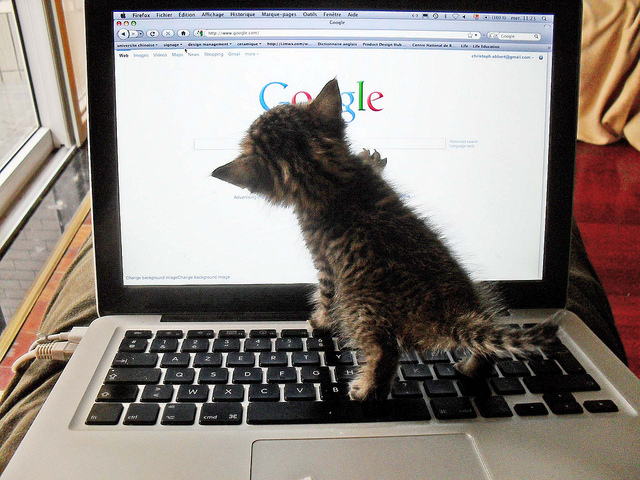

 Photo by Mr Thinktank / CC BY
I have no idea how you've stumble across this tiny part of the internet, but since you're here, make yourself comfortable!
If you're keen on exploring, the sidebar menu should contain everything you need to navigate around.
Here is where all my blog posts are, alternatively you can browse through them using the archives, categories and/or tags.
Some pages are still under construction so you might see a couple of weird filler pages. I'll get to them soon!